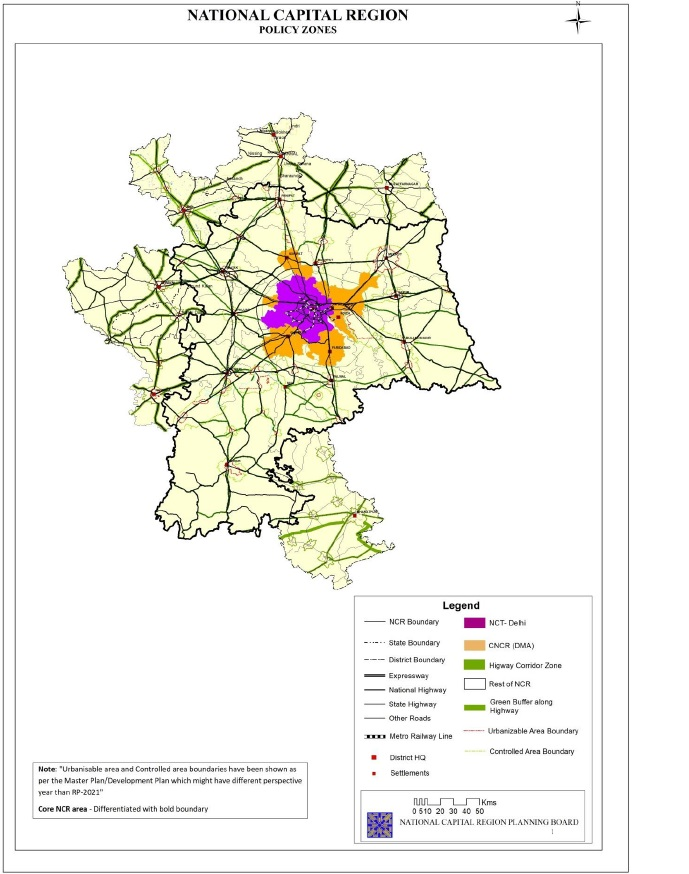

6 WeekFour: Policy and Remote Sensing
6.1 Summary
6.1.1 Policy Application and Earth Observation Data
There exists a large variety of EO data at disposal. These are data from the sensors for remote sensing application that depends on a the combination of spectral bands, resolutions and the cost. For example multi-temporal land cover (or land use) mapping, spectral signatures or libraries, change detection for e.g. urban or forest, vegetation stress for illegal logging, precipitation, elevation models (or point data) - such as LiDAR, temperature, night time lights (urban development), forest fire monitoring / predicting / “hot spot” detecting, pollution monitoring, drought indices, informal housing detection, water level data for monitoring, building or network outline (polygon / line) extraction, environmental monitoring (e.g. Aral Sea), estimations of resources - forest, water, snow, ice, green space
6.1.2 Challenges in the State-of-Art-of-Policy-Making
The global policy documents says that the New Urban Agenda is about standards and principles for planning, construction, development, management and urban improvement. However, its subsection 64, 65 and 67 only states the aspects of concern for particularly affect coastal areas, delta regions and small island developing states, among others. Discussion on the Sustainable Development Goals (SDG) that targets with measurable indicators for monitoring where Goal 11 of make cities and human settlements inclusive, safe, resilient and sustainable. It talks about target 11.5, monitoring 11.5 and data 11.5 with some understanding of data and its measuring ability having a data collection framework in disaster studies. However, some new addition of RS and EO data gets enclosed in targets 11.6 and 11.7. A complex approach that is difficult to discern about Who are the targeted community, its replication, and usefulness of the results. Metropolitan policy documents of London, NYC, Cape Town and Ahmadabad were also difficult to provide data specifications, their use and applicability. Similarly the local level planning and development authorities do work on fire, policing, transport and development guidelines and have to adheres to these goals too. It can be concluded that some studies fail to integrate their outputs with requirements of local areas, governments or cities with generic statements. In addition, cities set policies but often focus on legislation or monitoring as opposed to prevention.
As such remote sensing could aid in systematic data driven interventions for decision-making and in order to related to today’s session, I checked the policy document for Delhi-National Capital Region(NCR) is metropolitan regional center for the capital of India try to plan and organise the anthropocentric actives and its impact of more than 71 million people. Their aim and objectives are that in order to keeping in view the physical growth and excessive pressure of development in the CNCR, the participating states will prepare a sub-plan for their respective states. Emphasis should be given to transportation, civic infrastructure, land use and conservation. Further, in order to achieve the objectives of the regional plan, the NCR has been divided into various policy zones as NCT-Delhi (1,483 sq kms), DMA (Delhi Metropolitan Area) excluding NCT-Delhi (1,696.85 sq kms), The Rest of NCR comprising an area of 27,063 sq kms (induces development parts of abutting state Uttar Pradesh, Haryana and Rajasthan states), Highway Corridor Zone (HRZ) and Natural Conservation Zone (NCZ) as shown figure below.
Figure-1: National Capital Region (NCR) Delhi, Policy Zones
6.2 Application
The authors K.S.S. Parthasarathy and Paresh Chandra Deka in their article, review on remote sensing and GIS application in assessment of coastal vulnerability and shoreline changes. They review and assess the shoreline changes and the coastal vulnerability index (CVI) providing the insight knowledge for the literature to determine the critical parameter that influences the coast to a greater extent for a particular study. However, the review article they miss on the application of RS aid to regional bodies to mitigate coastal vulnerability and shoreline change. Interestingly, K. Sowmya et al. studies urban flood vulnerability zoning of Cochin City, southwest coast of India, using remote sensing along with GIS tool. Assessing the vulnerability through the application of multi-criteria evaluation approach in a GIS environment using remotely sensed images along with SRTM DEM, census details, city maps and field study, they They prepare a flood vulnerability zoning into categories of low, moderate, high and very high vulnerable areas. In turn they calculate the proportion of area under very high and high category and nature of vulnerability. However, their effort leaves the reader to wonder how to implement the RS and GIS driven study at the spatial level.
6.3 Reflection
I liked the part where we carry forward the learning of last term module of CASA0005-GIS and apply linear regression, spatial auto regression (SAR), lag etc. RS standalone cannot help but needs the GIS tools too. There exists dis-integrated effort in term of tool and techniques to resolve spatial problems which the articles refereed in the application part represents too. The details discussed on different sensors data stood out for me. Additionally, we added InSAR learning to last week’s SAR knowledge.
Moreover usage of EO data are lost in these efforts. Therefore, the informed EO data policy and decision-making can help achieve their goals and improve urban areas more effectively in a data informed manner. Thus, for such learning the professor designed group exercise to present with a case study to pitch the concern government, the idea of one/ more suitable remote sensing application, data and detail to resolve a pressing matter in their metropolitan area level.
Reference: Parthasarathy, K.S.S. and Deka, P.C., 2021. Remote sensing and GIS application in assessment of coastal vulnerability and shoreline changes: a review. ISH Journal of Hydraulic Engineering, 27(sup1), pp.588-600. Sowmya, K., John, C. M., & Shrivasthava, N. K. (2015). Urban flood vulnerability zoning of Cochin City, southwest coast of India, using remote sensing and GIS. Natural Hazards, 75, 1271-1286.